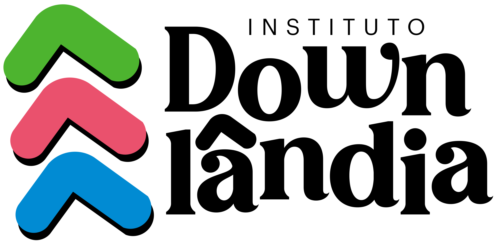

Me Down Abraço
Uma equipe de acolhedores capacitados e super preparados para realizar o acolhimento de familiares que recebem o diagnóstico da T21 em sua família.

O Instituto Downlândia é um espaço de encontro, escuta e pertencimento para pessoas com síndrome de Down e suas famílias. Aqui, ninguém caminha sozinho.
Atendimento gratuito para famílias em qualquer fase da jornada.

Encontros que fortalecem vínculos, trocam experiências e acolhem dúvidas sem julgamentos.

Compartilhar histórias, aprender juntos e construir caminhos com mais leveza.

Famílias, profissionais e parceiros caminhando juntos por mais informação, inclusão e respeito.
O Instituto Downlândia nasce do encontro de famílias que descobriram na partilha um jeito mais leve de viver a jornada da síndrome de Down. Criamos um espaço seguro para acolher sentimentos, fortalecer vínculos e construir caminhos de autonomia e inclusão.
Aqui, cada história importa. Acreditamos em escuta atenta, informação de qualidade e na potência de uma rede que cuida e caminha junto, passo a passo.
Saiba mais sobre quem somos
Se você acabou de receber o diagnóstico, está se sentindo sobrecarregado(a) ou quer se aproximar de outras famílias, nós estamos aqui para caminhar ao seu lado.
Conte pra gente um pouco da sua história. Nosso time de acolhedores entra em contato com todo cuidado e sigilo.
Como funciona o acolhimento?
Você preenche um formulário simples, escolhe a melhor forma de contato e combinamos juntos o primeiro encontro.
Quanto custa?
O acolhimento é gratuito. Se quiser e puder, você pode apoiar o Instituto com doações.
Cuidar é presença e constância. Nossos projetos transformam acolhimento em experiências reais: escuta, troca e informação de qualidade para famílias que vivem a T21 no dia a dia.
Uma equipe de acolhedores capacitados e super preparados para realizar o acolhimento de familiares que recebem o diagnóstico da T21 em sua família.

Um Podcast com bate-papo com profissionais especialistas em T21, famílias que compartilham suas experiências e pessoas com T21 que trazem para nós o seu olhar do mundo.

Comunidades para mães, pais, gestantes e familiares de pessoas com T21 que têm a finalidade de aproximar as pessoas e tornar real a troca de experiências.
Encontros periódicos que proporcionam às famílias um local seguro e acolhedor para que possam se identificar e trocar experiências, assim como assistir a palestras cheias de informação de qualidade.
Palestras em empresas, escolas e qualquer outro local que deseja abrir suas portas para se aprofundar no mundo da Síndrome de Down.
Mais do que estatísticas, cada número representa famílias, encontros e trajetórias de acolhimento que seguimos cuidando com carinho.
Empresas parceiras
+0
Abraçam a nossa causa
Famílias acolhidas
+0
Famílias que já passaram por nossos espaços de escuta e apoio.
Pessoas em eventos
+0
Participações somadas em encontros, formações e rodas de conversa.
Seguidores no Instagram
+0
Uma comunidade que acompanha, apoia e compartilha nossas ações.
Cada contribuição ajuda a manter encontros de acolhimento, atividades com as famílias e ações de sensibilização pela inclusão. Com seu apoio, seguimos cuidando de mais pessoas.
Você pode doar via Pix de forma rápida e segura. Qualquer valor faz diferença.
Doação via Pix
Chave Pix (CNPJ):
51.836.705/0001-84
INSTITUTO DOWNLÂNDIA
Você também pode copiar a chave e colar direto no aplicativo do seu banco.
Se o seu coração sente que é hora de pedir ajuda, este é um bom lugar para começar. Preencha o formulário e conte um pouco da sua história. Estamos aqui para ouvir.